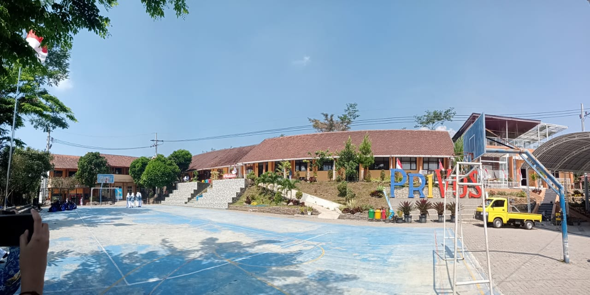
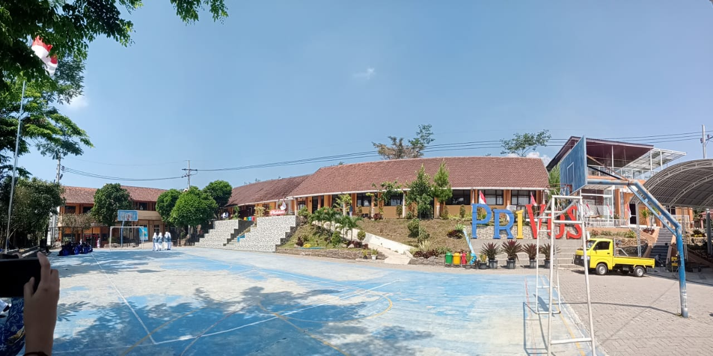

SMK Negeri Prigen didirikan pada tahun 2005 merupakan lembaga pendidikan.yang terletak di jl. Pecalukan Kelurahan Ledug Kecamatan Prigen Kabupaten Pasuruan Provinsi Jawa Timur. Lokasi SMKN Prigen merupakan kawasan wisata di daerah pegunungan antara gunung Arjuno dan gunung Penanggungan. Karena kawasan wisata inilah yang melatarbelakangi Dinas Pendidikan Kabupaten Pasuruan untuk mendirikan SMKN Prigen dengan kompetensi keahlian Jasa Boga dan Perhotelan Pada tahun 2005, SMKN Prigen membuka pendaftaran hanya 2(dua) kompetensi keahlian yaitu Jasa Boga dan Perhotelan. Pada tahun 2007 SMKN Prigen menambah 1 (satu) kompetensi keahlian yaitu Multimedia. Pada tahun 2013 SMKN Prigen menambah lagi 3 (tiga) kompetensi keahlian yaitu Teknik dan Bisnis Sepeda Motor (TBSM), Teknik Komputer dan Jaringan (TKJ) dan Akuntansi.
Berikut adalah beberapa penjelasan tentang beberapa jurusan di SMKN 1 prigen.